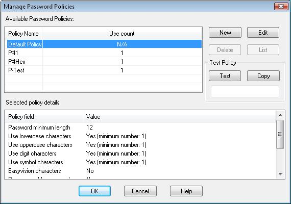
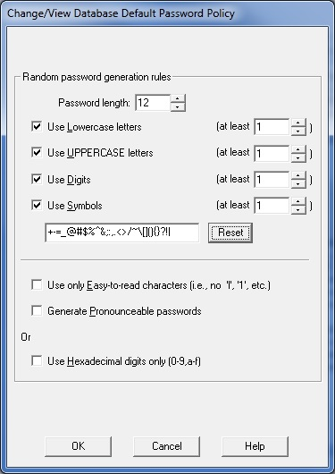
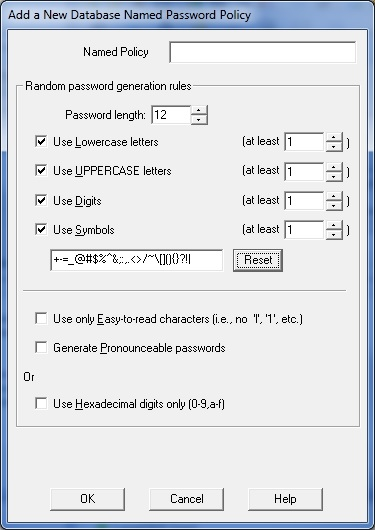
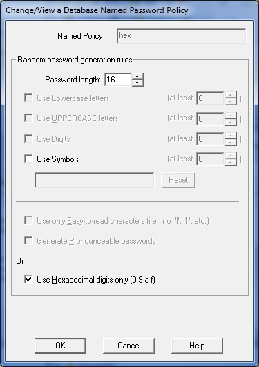

PasswordSafe V3.28 and later provide the facility to create and manage Named Password Policies via the "Manage → Password Policies..." menu item. These are database specific and are stored in the database header. This menu also replaces the setting of the database defaults via the "Manage → Options" menu item.
Via this dialog, one can edit the current database default password policy and create, edit or delete any new "Named" policies. Also, you cannot delete a named policy that is being used by at least one entry in the database. After selecting a policy, its details will be shown below. You can also List the entries referencing a Named Password Policy by clicking on the List button and then go back to its details by clicking on the Details button. If the list of entries is displayed, you can double click on an entry to edit/view it.
When the database's default policy is selected, you may use the Edit button to change its values. The following dialog is shown.
By selecting the New button, the following dialog is used to add a new Named Password Policy. The initial values are taken from the current database's default password policy. In addition to the normal checks on the consistency of the information you enter, you must also provide a unique name (within this database) for this policy. Note: The name cannot exceed 255 characters in length.
When a Named Password Policy is selected, you may use the Edit button to change its values and the following dialog is shown. You may not change the name of an existing Named Password Policy.
The Add/Edit entry function and the "Manage → Generate Password" function have both been updated to allow an entry to use a named policy or to allow the generation of a random password using a Named policy. One reason to keep unused Named Password Policies is to allow them to be used only to generate random passwords.
You may select the default or any defined Named Password Policy and click the Test button to create a random password using its rules. You may also then copy this to the clipboard.
If the database is in read-only mode, you may not add a new Named Password Policy, edit the database default policy or an existing Named Password Policy nor delete an unused Named Password Policy. You may, however, View both the default and other policies. Any changes made to this policy whilst viewing will not be saved.
You may use the Undo and Redo buttons (or the shortcuts Ctrl+Z and Ctrl+Y [or the equivalent ones if you have changed them via the "Manage → Options" Shortcut property page]) to Undo any changes you have made on this dialog e.g. changed the policy values of the database default policy or a Named Password Policy, added a new or deleted an unused Named Password Policy. If you have undone a change, you can Redo it as long as you have not made another change in between. Changes are not saved in the database until you press OK to exit this dialog.
When a database is exported to XML (whether it is a specific subset of the entries in the database or the whole database), all the Named Password Policies in the current database are also exported. During the subsequent import of that XML file, all the Named Password Policies are also imported into the current database. If a Named Password Policy of the same name already exists in the current database and it has the same policy settings as that being imported, then it will be used by any entries referencing it when they are imported. However, if the imported Named Password Policy has different policy settings to that in the database with the same name, then the policy will be imported with the words "Imported - datetime" appended to its name (where the 'datetime' is the date/time of the Import) and all imported entries referring to it will now reference the newly named policy.
When importing a XML file, if the any record references a Named Password Policy that does not exist in the current database (or in the XML file being imported), then the entry will be changed to use the current database default policy. Warning messages will be placed in the Import log show which entries have been affected.
When exporting to a Text file, the name of any referenced Named Password Policy is also exported. However, there is no facility to also export the values contained in these Named Password Policies.
Due to the above restriction, when importing a Text file, if the any record references a Named Password Policy that does not exist in the current database, then the entry will be changed to use the current database default policy. Warning messages will be placed in the Import log show which entries have been affected.
When a whole or subset of a database is merged into the current database, any Named Password Policy referenced by the entries being merged will be brought across from the source database. If a Named Password Policy of the same name already exists in the current database and it has the same policy settings as that being copied across, then it will be used by any entries referencing is are merged. However, if the imported Named Password Policy has different policy settings to that in the database with the same name, then it will be imported with the word "Merged - datetime" appended to its name (where the 'datetime' is the date/time of the Merge) and all entries referring to it will now reference the newly named policy.
Similarly, when one or more entries are dragged from another database and dropped into the current database except "Drag - datetime" will be used to make the Named Password Policy unique.